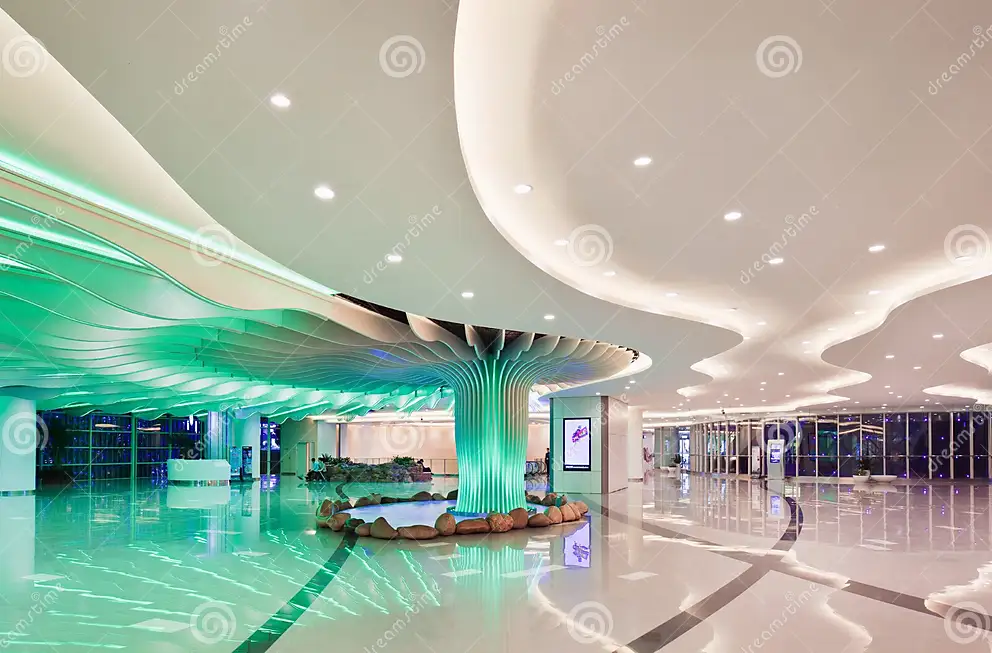
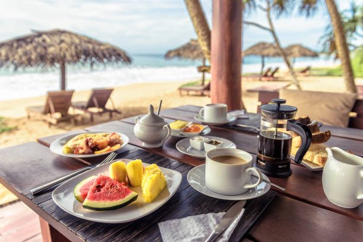

PRIVATE ISLAND RESORT

Escape to our exclusive PRIVATE ISLAND RESORT, nestled in the pristine beauty of nature. With breathtaking views, luxurious accomondations, and a wide range of activities, our resort offers an unparalled getaway experience.
Selling Points:
- Unparalled Seclusion: Experience ultimate privacy and tranquility on our secluded private island, away from the hustle and bustle of everyday life.
- Pristined Natural Beauty: Immerse yourself in the untouched beauty of nature, with pristine beaches, crystal-clear waters, and lush tropical landscapes.
- Luxurios Accommondations: Indulge in our exquisite villas, cottages, or beachfront bungalows, meticulously designed to provide utmost comfort and relaxation.
- Exciting Activities: Embark on thrilling adventures with a variety of water sports, such as snorkeling, scuba diving, and kayaking. Or unwind with rejuvenating spa treatments and wellness activities.
- Exquisiting Dining: Delight your taste buds with deluctable cuisine crafted by our world-class chefs offering a fusion of international flavor and local delicacies
- Impeccable Service: Our dedicated staff is committed to providing exceptional service, ensuring your every need is met and creating unforgetable memories.
- Stunning Sunsets: Witness breathtaking sunsets from the comfort of your own private paradise, creating picture-perfect moments that will stay with you forever.

Here are some unique features and offerings that make the PRIVATE ISLAND RESORT stands ou
- Overwater Bungalows: This resorts offers luxurious accomondations built on stilts over the water, providing stunning views and directs acess to the ocean.
- Private Villas with Personalized Service: This resorts provide private villas with dedicated staff, including butters, chefs, and housekeepers, to cater to guests' every need.
- Exclusive Beach Clubs: it also have a private beach clubs, offering exclusive access to pristine beaches, beachfront pools, cabanas, and beachside dining.
- Wildlife Encounters: it's located in areas where guests can have unique wildlife, experiences, such as swimming with dolphins, turtle hatchling releases, or guided safaris.
- Eco-Friendly Practices:this resorts prioritize sustainability and eco-conscious practices, such as using renewable energy, implementing recycling programs, and supporting local conservation efforts.
- Wellness and Retreat Programs, Cultural Immersion, Adventure Sports, and so on...
Go To The Next Page